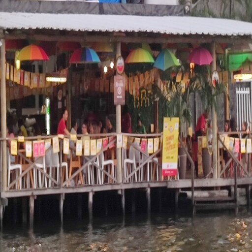
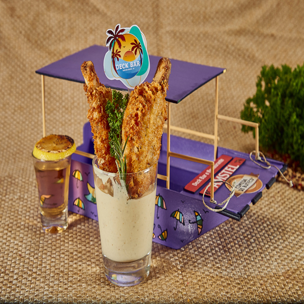
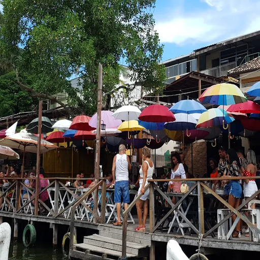
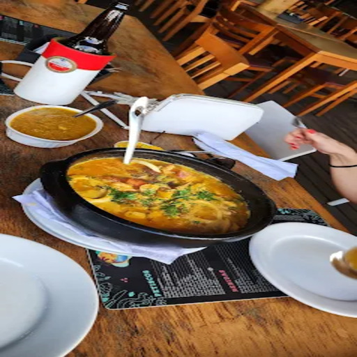
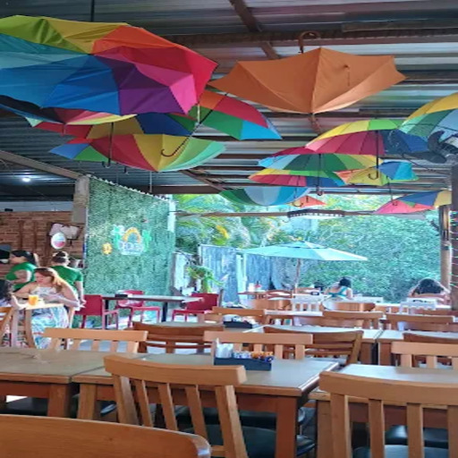
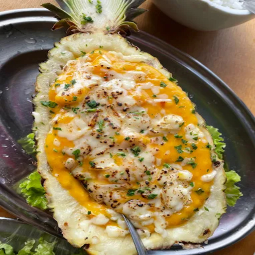
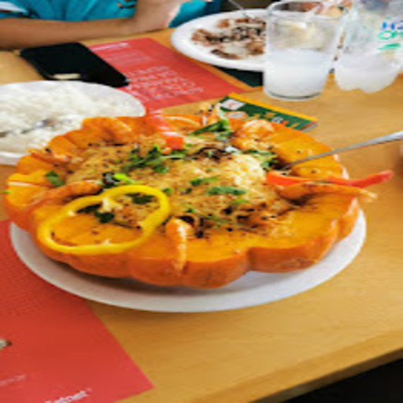
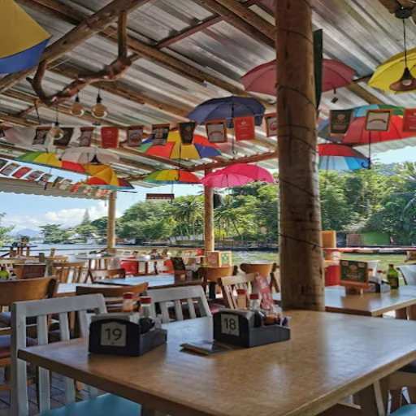

Deck Bar
Tradição, música ao vivo e um cenário inesquecível à beira da lagoa.
📸 Conheça o Espaço








O Deck Bar é um dos restaurantes mais tradicionais da Ilha da Gigóia e se destaca pelo ambiente descontraído e também pela localização privilegiada à beira da lagoa. O espaço é bastante procurado por visitantes que querem aproveitar uma boa gastronomia em um cenário agradável, com vista para os canais e o clima típico da região.
A casa tem forte presença na culinária de frutos do mar, com pratos que valorizam ingredientes frescos e sabores marcantes.
🍍 Destaques & Atrações
- Camarão no Abacaxi: Uma das marcas registradas do restaurante, o prato chama a atenção tanto pela sua apresentação tropical e criativa quanto pelo sabor irresistível.
- Guarda-chuvas Coloridos: A decoração suspensa cria um ambiente vibrante e descontraído, tornando-se o cenário perfeito (e muito procurado) para fotos dos visitantes.
- Comida di Buteco: O Deck Bar também participa do tradicional festival gastronômico, apresentando petiscos criativos que sempre fazem grande sucesso entre os clientes.
Com boa comida, música ao vivo e um ambiente sempre animado, o Deck Bar é uma das paradas mais populares e obrigatórias para quem deseja aproveitar ao máximo o clima da Ilha da Gigóia.